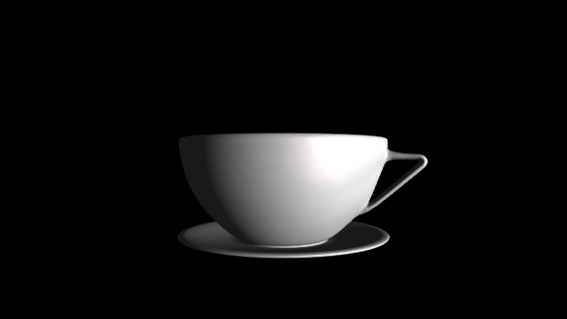
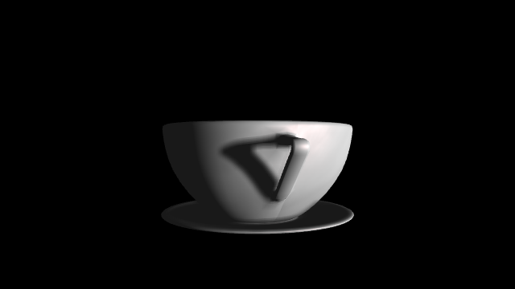

net.mschorn.sandbox
About
This page contains a set of samples. All these samples are
- only written to visualize ideas as code snippets
- certainly not error free
- possibly never done
![[JOGL] Basecode](./images/jogl/basecode/ITBasecode.png)
![[LWJGL] Basecode](./images/lwjgl/basecode/ITBasecode.png)
[LWJGL] Forward shading sample
Requirements: Java 7, OpenGL 4.2
Keyword-Bingo: VS, FS, VAO, IBO, VBO, UBO, sampler, texturing, per pixel lighting
[LWJGL] Shadow volume sample
Requirements: Java 7, OpenGL 4.2
Keyword-Bingo: VS, GS, FS, VAO, IBO, VBO, UBO, sampler, texturing, per pixel lighting
Legacy
As control group of the OpenGL specification, the Khronos Group introduces with OpenGL 3.0 a deprecation model in which certain features be marked as deprecated. Today, most of the deprecated features are removed from the OpenGL core profile. But there are still available in the OpenGL compatibility profile.
All the following samples based on the OpenGL fixed function pipeline. This pipeline is completely marked as deprecated and removed from the OpenGL core profile. So there is a leak of forward compatibility in these samples.
[LWJGL] Fixed Function VBO (deprecated)
![[LWJGL] Fixed Function VBO](./images/lwjgl/deprecated/samples/vbo/ITSimpleVBO.png)
Requirements: Java 7, OpenGL 1.5
Keyword-Bingo: IBO, interleaved VBO, triangle, coloring
![[LWJGL] Textured Fixed Function VBO](./images/lwjgl/deprecated/samples/texture/ITTexturedVBO.png)